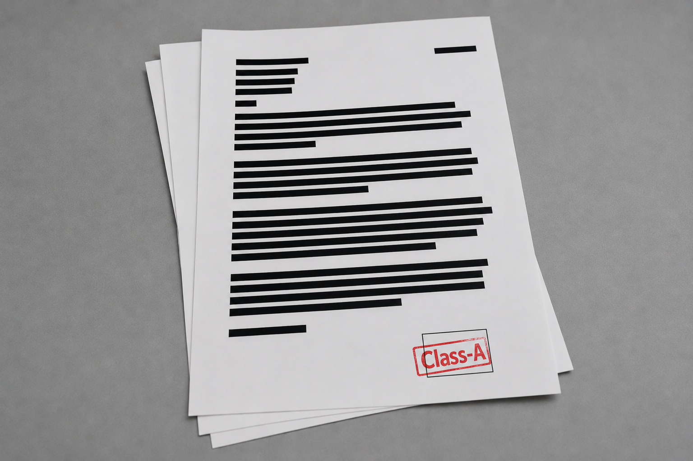
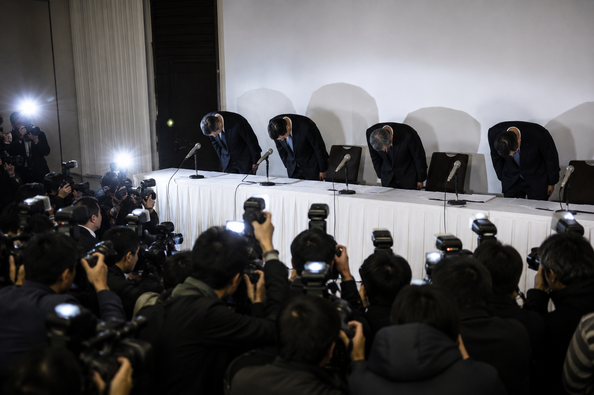

データ復旧事業大手の「株式会社オムニバス・アーカイブ」の完全子会社である「オムニバス・テクノロジーズ株式会社」（東京都港区）が、復旧依頼を受けた顧客の機密データを不正に抽出し、それを脅迫材料として複数の企業や個人から金銭を要求していた疑いが強まり、警視庁は18日、同社の役員ら数名を恐喝等の容疑で逮捕する方針を固めた。
捜査関係者によると、同社内に設置されていた非公然の部署（通称：データ執行班）が組織的に関与していたとみられ、全容解明に向けた捜査が進められている。
復元データから「弱み」をランク付けか
事件発覚の端緒となったのは、同社内部のシステムサーバーから流出したとみられる「業務マニュアル」および「事例報告書」と呼ばれる内部告発データだ。
流出した資料によれば、同社は高額な「特急プラン」を利用して持ち込まれたサーバーやスマートフォンなどの記憶媒体からデータを復元した際、顧客へ納品した直後にデータを消去せず、別のサーバーへ密かに転送。その後、スタッフが手作業でデータの内容を検閲し、企業の不正会計の証拠や個人のスキャンダルになり得る情報を「有用性スコア」としてランク付け（Class-A〜C）していたという。

こうして抽出された「弱み」を盾に取り、法人に対しては『高度なセキュリティ保護』と称した架空のコンサルティング契約を結ばせ、毎月多額の金銭を支払わせていた。また、個人に対しては、データを暴露しない条件として、違法薬物の運搬などの非合法な業務（いわゆる闇バイト）を強要していた疑いも持たれている。さらに、金融価値のあるクレジットカード情報などは、ダークウェブ上で売却され資金化されていたという。
親会社「オムニバス・アーカイブ」は関与を完全否定
この前代未聞の恐喝事件を受け、親会社である株式会社オムニバス・アーカイブは18日午前に緊急の記者会見を開いた。
同社の広報担当者は、「関連会社における一部社員の逸脱した違法行為について、誠に遺憾であり、被害に遭われた方々に深くお詫び申し上げる」と謝罪した。
一方で、データの不正抽出や恐喝への本社（親会社）の関与については「一切関知していない。業務委託先のテクノロジーズ社が独自の判断で行った犯罪行為である」と全面的に否定した。

オムニバス・アーカイブ側は、「我々はデータの復元およびAI学習のためのシステム運用を適正に行っており、事後対応を委託していたテクノロジーズ社が提供データを悪用するとは夢にも思わなかった」と主張。今後は警察の捜査に全面的に協力するとともに、テクノロジーズ社との業務委託契約を即日解除し、同社に対する損害賠償請求の準備を進めているという。
「トカゲのしっぽ切り」との見方も？
しかし、業界関係者からは今回の騒動における親会社の対応に対して、いくつかの疑念の声も上がっている。
ITジャーナリストのA氏は、「同社が提供するAI（オムニバス・コア）に学習させるためのデータを抽出・転送する過程で、親会社側がデータの悪用リスクや、関連会社の不審な動きに本当に気がついていなかったのか、疑問が残る」と推測する。
もし仮に、最初から『汚れ仕事』およびそれに伴う法的責任を関連会社へ押し付けるような運用構造を意図的に作っていたとすれば、今回の素早い契約解除と関与の否定も、見事なトカゲのしっぽ切りと言えるのではないだろうか。
事実として、オムニバス・テクノロジーズ社は今回の事件により事業停止状態に陥り、近く倒産（破産手続き）に向かうと見られている。一方で、親会社であるオムニバス・アーカイブは法的な追求を免れ、現在も堂々とデータ復旧事業を継続している。
真実は、逮捕されるテクノロジーズ社の役員らの供述、そして未だ全容が見えない「オムニバス・コア」のシステム解析を待つしかない。私たちの「記憶」は、果たして本当に守られていたのだろうか。